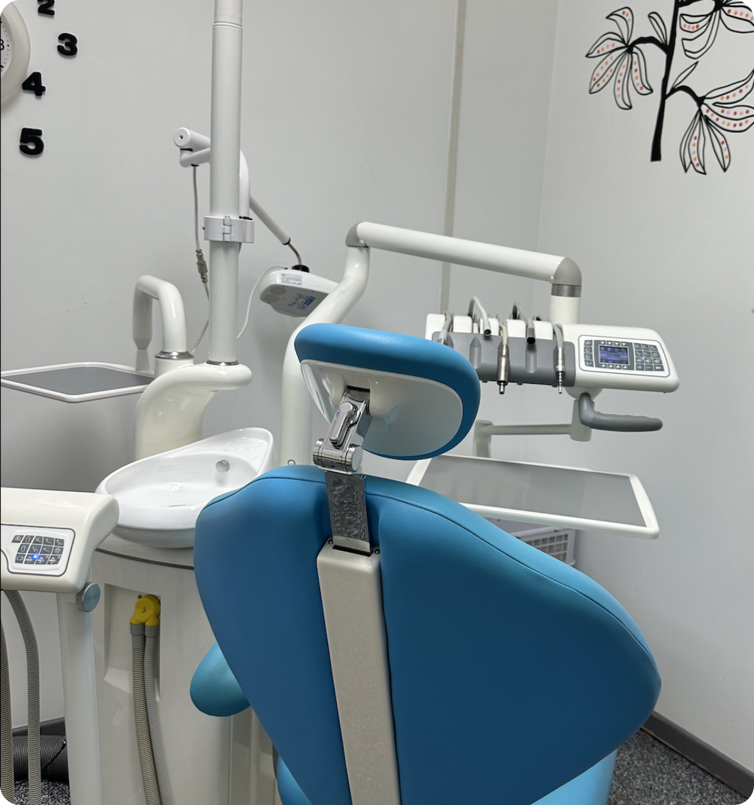
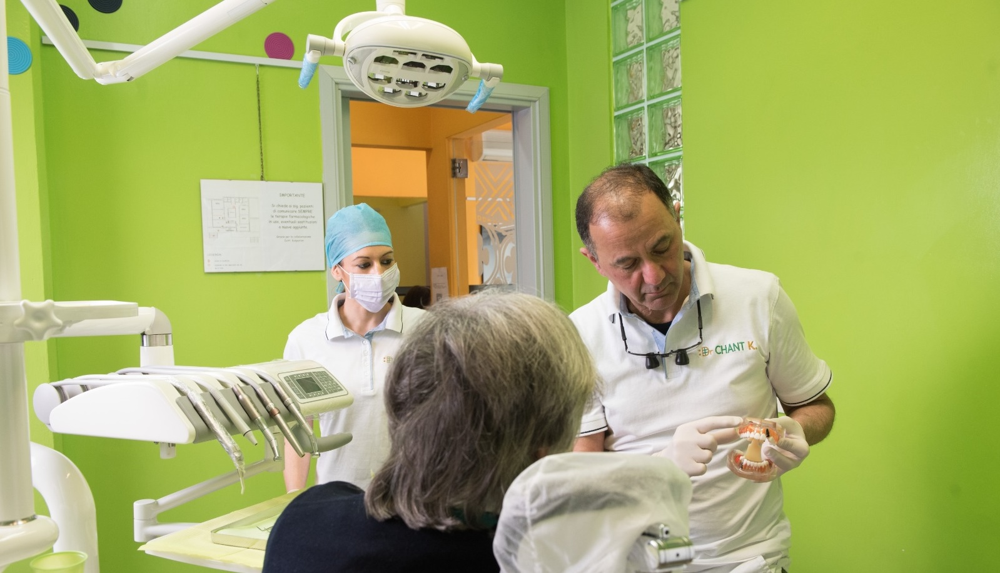
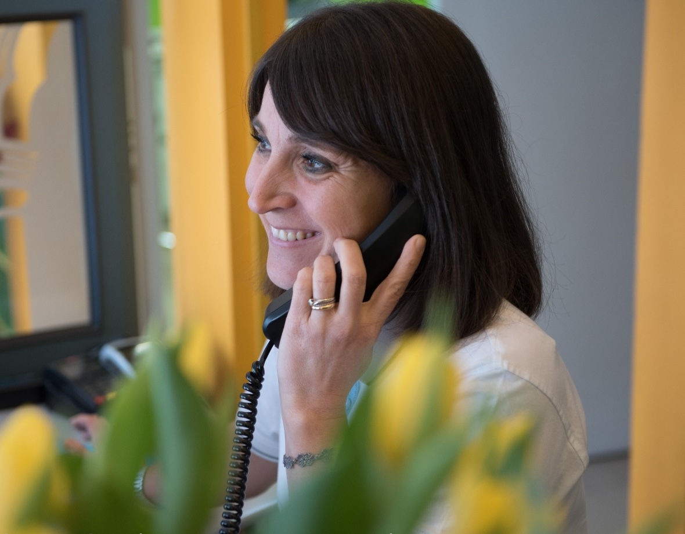
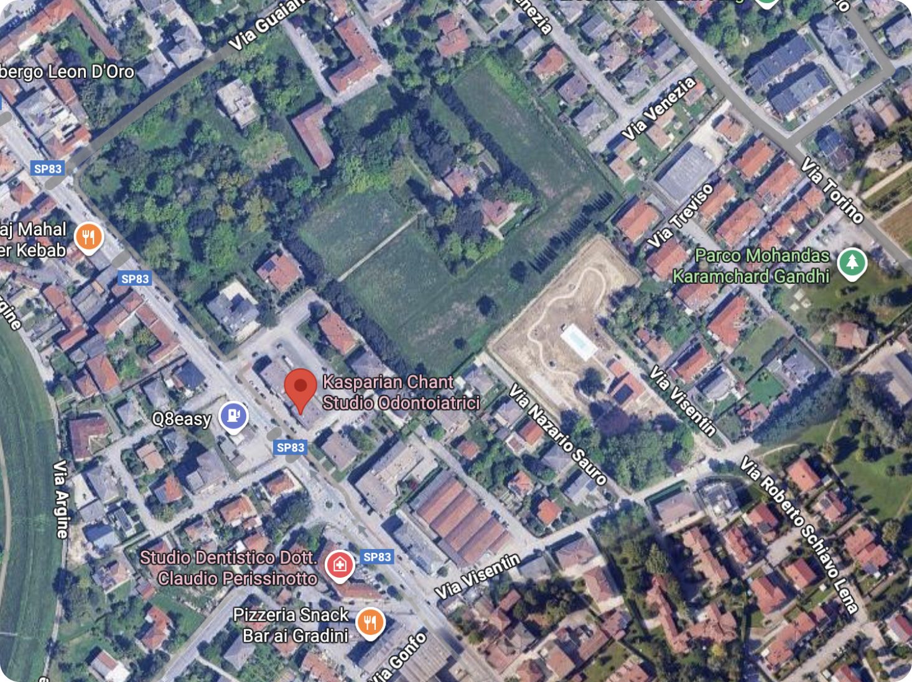

Protocolli guidati dal rischio
Le linee guida EFP indicano un percorso progressivo: controllo dei fattori di rischio, igiene domiciliare mirata, strumentazione professionale e mantenimento periodico.
Dal 1986 lo studio del Dr. Chant Kasparian è un punto di riferimento per la salute dentale a Noventa di Piave, con un'esperienza che supera i 40 anni nel settore.

La prevenzione moderna combina igiene professionale, controllo del biofilm, istruzioni personalizzate e richiami calibrati sul rischio individuale.
Le linee guida EFP indicano un percorso progressivo: controllo dei fattori di rischio, igiene domiciliare mirata, strumentazione professionale e mantenimento periodico.
La pulizia professionale viene integrata con strumenti sonici/ultrasonici, motivazione all'igiene e controlli programmati in base a gengive, tartaro e predisposizione del paziente.
Quando indicato, fluoro professionale e sigillature aiutano a ridurre il rischio di carie nelle superfici più vulnerabili.
La chirurgia orale moderna punta a diagnosi precisa, pianificazione digitale e interventi meno invasivi, con attenzione a comfort e guarigione.
La CBCT, o TAC cone beam, permette una visione tridimensionale di denti, ossa, seni mascellari e strutture nervose, utile nella pianificazione di estrazioni complesse, impianti e chirurgia guidata.
I dati 3D possono essere usati per valutare volumi ossei, traiettorie implantari e rapporti anatomici prima dell'intervento, migliorando precisione e prevedibilità.
Quando il caso lo consente, l'approccio mini-invasivo riduce trauma sui tessuti, tempi operatori e fastidio post-operatorio.
L'ortodonzia contemporanea usa diagnosi digitale, simulazioni e dispositivi personalizzati per correggere allineamento, funzione e stabilità del sorriso.
Gli allineatori Invisalign sono mascherine trasparenti rimovibili progettate digitalmente per spostare gradualmente i denti, con una pianificazione virtuale del trattamento.
La scansione digitale riduce la necessità di impronte tradizionali e consente modelli 3D utili per diagnosi, monitoraggio e comunicazione con il paziente.
Le tecnologie digitali permettono di valutare non solo l'estetica, ma anche occlusione, spazi, rapporti dentali e stabilità finale.
La medicina odontoiatrica del sonno si occupa di russamento e apnee ostruttive, in collaborazione con il medico specialista quando serve una diagnosi completa.
Le linee guida AASM/AADSM indicano dispositivi di avanzamento mandibolare personalizzati come opzione terapeutica per pazienti selezionati con apnea ostruttiva del sonno o russamento.
La visita odontoiatrica valuta arcate, articolazione mandibolare, usura dentale e spazio orale; la scansione digitale può aiutare nella progettazione del dispositivo.
Il dispositivo viene controllato e regolato nel tempo per migliorare comfort, efficacia e aderenza al trattamento.
Offriamo una gamma completa di servizi odontoiatrici per prenderci cura del tuo sorriso a 360 gradi.
Pulizia accurata e prevenzione per mantenere i tuoi denti sani e puliti.
Soluzioni innovative come la scannerizzazione 3D per raddrizzare e allineare i denti con comfort e precisione.
Interventi specialistici eseguiti con la massima cura e professionalità.
Interventi specialistici eseguiti con la massima cura e professionalità.
La nostra attenzione ai particolari si estende oltre la cura dentale, garantendo un ambiente sicuro e igienico per tutti i nostri pazienti.
Sistema avanzato di trattamento dell'acqua per prevenire la proliferazione di batteri come la legionella, garantendo acqua pura e sicura in tutti i nostri impianti.
Protocolli di sterilizzazione all'avanguardia per tutti gli strumenti e le superfici, eliminando qualsiasi rischio di contaminazione incrociata.
Monitoraggio costante e controlli periodici di tutti i sistemi per garantire il massimo livello di sicurezza e igiene in ogni momento.

Tutto lo staff dello Studio Dentistico
Prenota subito una visita di consulenza gratuita e scopri come possiamo migliorare il tuo sorriso.

Siamo qui per te, contattaci per informazioni!
studiokasparian@chant.it
